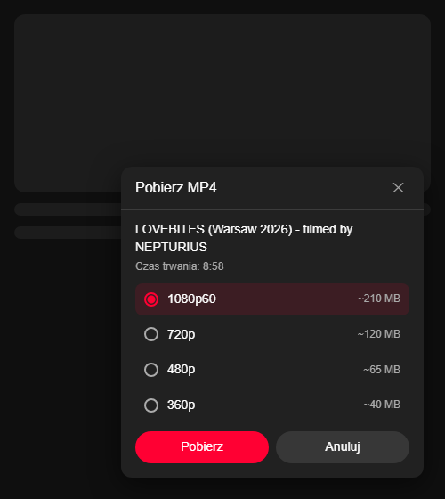
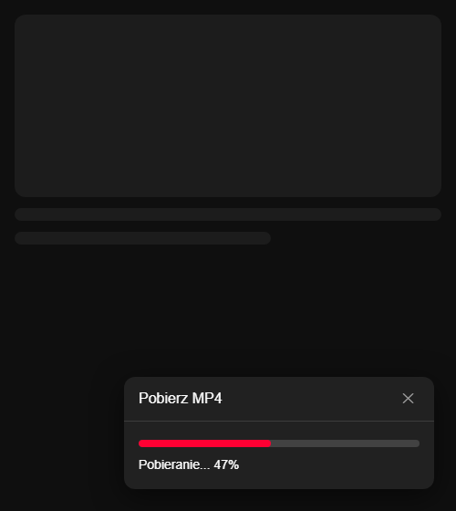
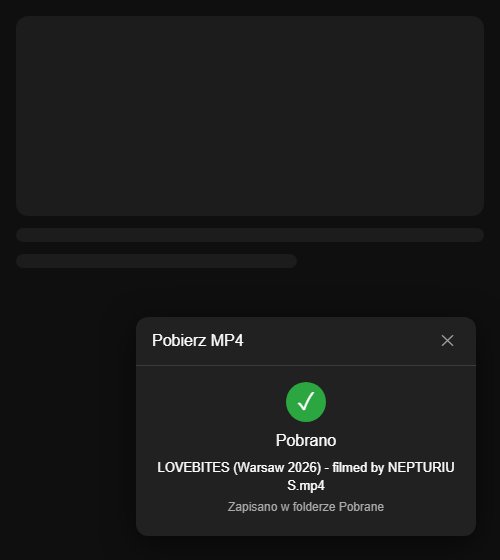

A quality picker in the player, progress while it runs, and a history of what you already have. The file lands in your Downloads folder.
Everything runs on your own machine. No server of mine sits in the middle.

Latest release: checking…
Unpack the archive anywhere and run install.ps1. It copies
the extension and the local host into your profile, installs whatever is
missing through winget and registers the host for Chrome, Edge and
Brave. No administrator rights.
The extension is not in the Chrome Web Store, so after the installer you
load it once by hand: open chrome://extensions, turn on
developer mode and use Load unpacked on the folder the installer
names.
The panel and the popup are in Polish. It needs Windows 10 or 11 and one of Chrome, Edge or Brave; the installer takes care of Python, yt-dlp, ffmpeg and the JavaScript runtime yt-dlp uses. Whether you may keep a copy of a given video is between you and whoever holds the rights to it.
YouTube serves video and audio as separate streams, which no extension API can join. So the extension asks a small local host to fetch both and mux them, and what you get back is one ordinary file.
A button next to the subtitles and settings, or Ctrl+Shift+Y.
The panel lists everything from 144p to 2160p with an estimated file
size for each one.
The extension icon opens the current video, the downloads still running with a cancel button, and everything finished before them.
Show in folder, play in your default player, download again, or drop the entry. The list is the point, not a log.
In the panel, on the toolbar badge and in Windows notifications, naming the phase it is in: video, audio, or merging the two.
A single MP4, H.264 and AAC where they are available, written straight
to the system Downloads folder as
<title> [<video id>].mp4.
Everything lands in your own profile and the host is registered under
HKCU. Reinstalling over an older version replaces it in
place, so the extension stays loaded.
The same panel, from picking a quality to the file being there.


The extension talks to a program on your own computer and to nothing else.
There is no account, no telemetry and no service of mine in the path. The extension hands the address to a local host, and the host fetches from YouTube exactly as your browser would.
Native messaging, notifications, the active tab and local storage. The
content script runs on youtube.com and nowhere else.
The extension id is pinned by the key in its manifest, and the local host accepts messages from that id alone. Another extension cannot reach it.